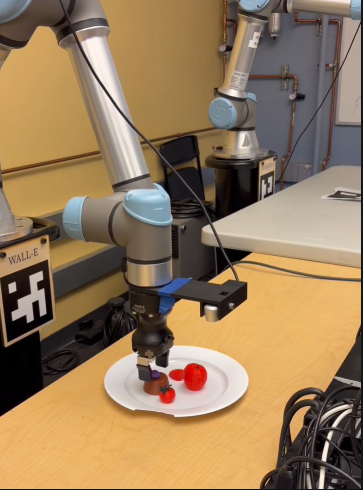
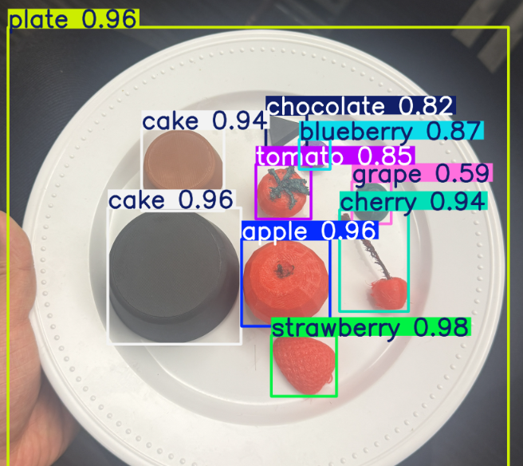
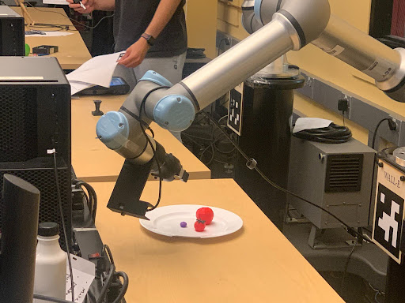
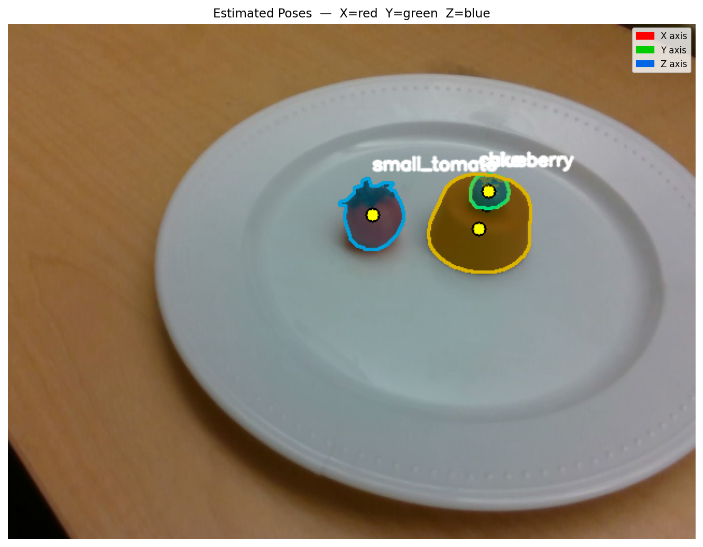
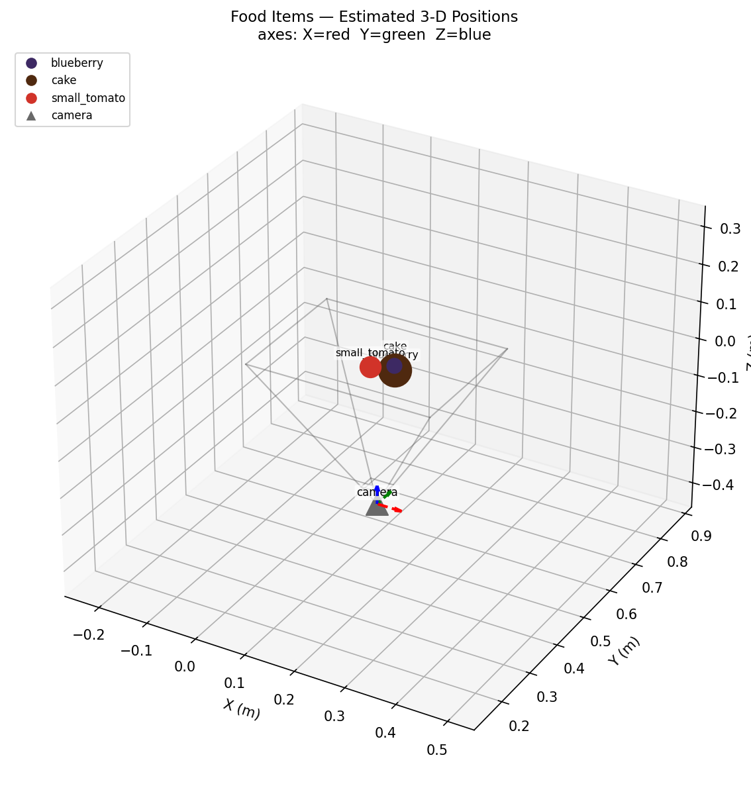
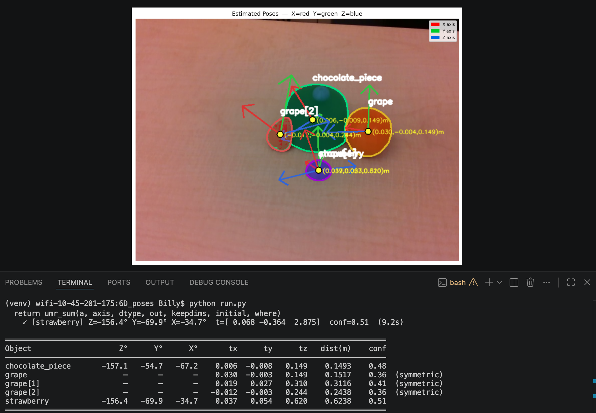

01 Inspection
The robot arm detects the plate and proceeds to orbit around the plate twice, taking multiple photos at different angles throughout the process. The photos are saved to a folder ready for segmentation.
ME C106A · Final Project Report
Culinary plating assistant made with an Intel RealSense camera paired with a UR7e Robotic Arm. Detects, scans, and memorizes plated dishes to replicate on command.

What if a robot could plate a dish as well as a human? Robotic culinary plating requires:
This project presents a robotic culinary plating assistant that uses a UR7e arm with an attached camera to capture a completed dish from multiple viewpoints and reconstruct a 3D model of the plated arrangement. The system identifies food items, estimates their poses relative to varying frames, and generates a pick-and-place plan to recreate the dish. Such a robot would be able to quickly, accurately, and consistently recreate dishes, allowing for shorter waiting times at restaurants.
Our project is split into two different phases: an inspection phase to scan each component on the plate, and an execution phase to begin plating food.
The robot arm detects the plate and proceeds to orbit around the plate twice, taking multiple photos at different angles throughout the process. The photos are saved to a folder ready for segmentation.
The photos during the inspection phase are segmented and approximate positions and orientations for each object on the plate are recorded. Then, upon being presented with various ingredients in view, the robot begins plating.
The pipeline splits into two ROS 2 packages — perception and planning — talking through topics, with MoveIt providing IK and motion planning underneath.
The perception package owns everything between the camera and a labeled 3D point: it runs YOLO on every RGB frame, lifts each bounding box into a 3D centroid using the RealSense depth pointcloud, and publishes detections in the robot’s base frame. The planning package owns the motion: it orbits the arm for inspection, accepts segmented poses from an offline 6D pose pipeline, and drives the pick-and-place state machine. The hardware layer — the RealSense camera, the custom-trained YOLO weights, and the UR7e arm — feeds frames into perception and is commanded by planning.
Read top-to-bottom, the data flow is:
MoveIt underlies the whole thing, providing inverse kinematics through /compute_ik and collision-aware trajectory planning through /plan_kinematic_path.
The diagram below mirrors that layout: hardware at the top sources data, perception extracts 3D world-frame detections, planning orchestrates the orbit and pick-and-place, and MoveIt sits underneath providing IK and motion planning. Click any block to jump straight to its detailed write-up in the Details section below.
The full deep-dive: a demo video showing the end-to-end pipeline, followed by a per-component explanation of the whole pipeline as well as critical design choices.
End-to-end demo run — orbit inspection → segmentation → pick-and-place sequence.
6-DoF Universal Robots UR7e with a parallel gripper. The arm is driven through the scaled_joint_trajectory_controller's FollowJointTrajectory action.
/toggle_gripper Triggers the gripper to open and close. It's assumed to be open at the startup./joint_states /joint_states is the topic that contains the current joint states in radians. It's used in the IK solver, armcircler, and the pick and place.Wrist-mounted depth camera providing aligned RGB, depth, and intrinsics over the standard RealSense ROS 2 topics.
/camera/.../color/image_raw — RGB stream used by YOLO to determine bounding boxes and centroids./camera/.../depth/color/points — This is the pointcloud used detection_node to find the centroid and depths of objects detected with YOLO./camera/.../color/camera_info — intrinsics used by pixel_to_world to calculate the position of objects based on where they appear on the image plane (camera).Note — the camera launch is intentionally external to the bringup so we can restart it without tearing down the planner.
A custom YOLO model was trained on images of 3D-printed food replicas for real-time object detection within the workspace. Done separately from the main design.
Label Studio.updated.pt (fine-tuned) is the primary model; previous models are retained as fallback checkpoints.

Note — food wasn't allowed in the lab; existing YOLO models trained on real food couldn't be utilized, requiring us to train one ourselves.
We chose YOLO as our object detector because it was fast, practical, and well-suited to our setup. Since the camera is constantly moving around the dish, it needs to reliably identify objects from many different angles and lighting conditions. YOLO handles this well with its single-stage architecture, which detects and classifies objects in one forward pass rather than multiple stages, keeping inference fast enough to run alongside the orbit in real time.
A custom model was necessary because our fruits are 3D-printed props with different colors and surface textures from real fruit, meaning no pretrained detector worked out of the box. We collected our own dataset of the props and fine-tuned YOLO from pretrained weights, which converged well even with a relatively small number of training images.
The alternatives we considered each had drawbacks. Classical computer vision techniques like color thresholding are too brittle under changing viewpoints and lighting, while heavier two-stage detectors like Faster R-CNN offer marginal accuracy gains at the cost of much slower training and inference. Since bounding boxes are sufficient to identify and localize each item on the plate, YOLO gave the best balance of accuracy, speed, and practicality within the time constraints of the project.
The main perception node. Runs YOLOv8 on every RGB frame, lifts each bbox into a 3D centroid through the depth pointcloud, and publishes the result in base_link.
YOLODetector.detect() returns class IDs, confidence, bbox, and 2D center.get_centroid_from_cloud_bbox() reprojects every cloud point into image coords, keeps the ones inside the bbox, and averages them.transform_point() resolves camera_link → base_link via the static TF + UR kinematic chain.plate_radius = 0.14 m of the latest plate centroid is rejected./detected_pick_point; plate always published on /detected_plate_point.Topic ordering matters — /detected_class must arrive before /detected_pick_point, otherwise per-class offsets silently fall back to defaults.
For plate exclusion, we chose to filter by radius from the plate centroid rather than by the plate's bounding box. A bounding box would incorrectly exclude objects sitting near the corners of the box but outside the actual plate boundary, since the plate itself is circular. Using a fixed radius from the centroid more closely matches the plate's true shape, so only objects genuinely on or overlapping the plate are dropped.
Thin stateless wrapper around Ultralytics YOLOv8. detect(image) returns a list of {class_id, class_name, confidence, bbox, center} dicts.
updated.pt (fine-tuned) is the default; best.pt and yolov8n.pt are kept as fallbacks.conf_threshold parameter on DetectionNode (default 0.5).Helper module that converts 2D detections into 3D centroids in base_link.
get_centroid_from_cloud_bbox() — projects every depth point into camera image coords, averages the ones inside the YOLO bbox.transform_point() — TF lookup chained from camera_link through the static TF and the UR kinematic chain.PointStamped in base_link, ready for IK.A key challenge was getting YOLO's 2D bounding boxes to interface correctly with the 3D coordinates from the RealSense camera. Our initial approach was to take the bounding box centroid from YOLO and pair it with the depth value from the RealSense to produce a 3D point. In testing, this caused the arm to move to locations far from the detected object.
We identified two likely causes:
With too many unknowns in the frame chain, we decided this approach would take too long to debug and moved to a more principled method using the camera intrinsic matrix.
Rather than starting from 2D pixel coordinates, we instead projected the RealSense's 3D point cloud into image space using the pinhole camera equations:
u = fx * X/Z + cx
v = fy * Y/Z + cy
This let us identify which 3D points fell inside each YOLO bounding box, take the mean X, Y, and Z of those points, and publish that as the object's 3D centroid. Combined with correcting the static transform to match our actual camera mount, this approach worked reliably.
The ArmCircler node is responsible for executing a sequence of joint trajectories using an action client and taking pictures at each waypoint. It uses the FollowJointTrajectory action type, which handles trajectory goals, feedback, and results.

poses.npy ([x,y,z,qx,qy,qz,qw]).captured_images/.True boolean value to the commander node to signify orbit completion.rot_z · rot_y · rot_x always points the camera at the plate.These frames are captured as a multi-view orbit around the plate. Drag the scrubber below to step through all 41 waypoints. The full set lives in captured_images/ for the downstream segmentation and triangulation pipeline.

Why orbit? Single-frame depth centroids degrade near the edge of the camera frame. Forty one views give the offline pipeline enough parallax for stable triangulation.
The Commander node orchestrates the entire pipeline, stitching together all the individual components and running in parallel with main.py via the bringup file. It gives the user visibility into what stage the robot is currently in — whether it is orbiting, computing masks, or executing pick and place.
Commander also runs the filtering and planning logic before execution begins. It drops any triangulated position whose Z falls outside the range [-0.03, 0.15] m or whose confidence is at or below 0.6, then keeps only the single highest-confidence instance per class. From the surviving detections it computes the pick order and publishes the final task list to main.py.
Beyond orchestration, Commander was also a significant debugging aid throughout development. We could easily skip sections of the pipeline, such as the orbit phase, to jump directly to the parts we were actively testing. In early stages, before the automatic planning algorithm was complete, we could manually specify which object to pick, which let us tune the per-class grasp offsets independently of the rest of the system. Overall, Commander served as a quality-of-life node that made the project easier to iterate on and helped the final demo run smoothly.
segment_batch.py — The commander node tells this node to run after the armcircler node is done. This node is responsible for detecting the foods in each image using YOLO and SAM2. It takes in the images folder and outputs a folder of images called "segmented" with the YOLO bounding boxes and SAM2 masks. → segmented/<stem>/<stem>_<class>_<i>_mask.png.

This is an image from our tests with live masking, running YOLO detection and SAM2 masking live from a webcam. This gave us performance issues on our laptops, and we later ran out of time to integrate it into our live demo on the lab hardware. Ignore the bounding YOLO labels as our model was still in progress.


The original plan for localizing food items on the plate was to use COLMAP to reconstruct a 3D point cloud from the 41 images captured during the arm's orbital inspection pass. This was abandoned for two reasons:
The solution was to abandon general-purpose reconstruction entirely and exploit the structure of the problem instead. Two facts made this possible:
The offline pose estimation pipeline takes three inputs:
poses.npy)captured_images/)segmented/)It outputs results/object_poses.npy — a list of detected objects with their estimated 3D position in the robot's base_link frame and a confidence score.
The pipeline runs as a subprocess under the SAM2 virtual environment's Python interpreter rather than the ROS Python, because it depends on PyTorch, SAM2, trimesh, and pyrender — none of which are installed in the ROS workspace. This keeps the two dependency trees cleanly separated while still allowing the Commander node to trigger the pipeline and consume its output.
The pipeline runs in position_only=True mode, which skips the full 6DoF render-and-compare path and estimates only 3D position. It does this in three steps.


base_link, with camera frustum for scale.Step 1: Camera pose computation. For each waypoint, the known end-effector pose is converted into a camera-to-world transform via a chain of three operations:
world_T_eeee_T_worldT_CAM_FROM_EE (camera sits +3 cm forward and 13.5 cm above the wrist) → cam_T_worldThis transform chain is what makes the approach work: because the robot arm is the camera rig, known kinematics replace the bundle adjustment step entirely.
Step 2: Per-view 2D observation. For each image, the pipeline loads the SAM2 masks and processes each detected object:
r_px = sqrt(area / pi)z_m = fx * (diameter_m / 2) / r_px, where diameter_m is the known physical diameter of the object class stored in constants.pyThe depth estimate is essentially monocular depth recovery using known object size as a scale reference — a simple but effective stand-in for a depth camera at this scale.
Step 3: RANSAC triangulation. Each object accumulates observations across all views in which it appears. These are passed to a RANSAC-based weighted Direct Linear Transform (DLT) triangulator:
Confidence is computed as the fraction of views in which the object was visible, capped at 1.0. The Commander uses this downstream to drop detections at or below 0.6 confidence and keep only the single highest-confidence instance per class.

The full pipeline (when position_only=False) would additionally estimate object orientation using DINOv2 visual features and rendered STL reference views — essentially a render-and-compare approach where the object's pose is refined until the rendered appearance matches the observed one. This was left unused for the demo for the same reasons COLMAP was abandoned:
For a pick-and-place task on roughly symmetric food items, orientation is largely unnecessary anyway. The gripper approaches from above, and the contact geometry is forgiving enough that a position-only estimate is sufficient for a reliable grasp.
The orientation that does matter — the end-effector's approach angle relative to each object — is handled not by the pose estimator but by the per-class grasp offset table in main.py. This encodes empirically tuned x/y corrections for camera-to-gripper misalignment and z heights for the pre-grasp, grasp, and lift phases. This is simpler and more reliable than estimating object orientation from images, because it captures the actual systematic error of the specific robot and camera mount rather than inferring object geometry from appearance.
Once segmentation and position estimation are complete, the commander node
waits for user input before beginning pick and place. After the user presses
Enter, the commander node sends a JSON-encoded list containing the
sorted objects and their estimated positions to main.py (the
pick-and-place node), and execution begins.

The pick-and-place pipeline is organized as a state machine that manages the
busy semaphore, the job_queue, and the full grasp
sequence. Every arm motion is executed asynchronously through trajectory
actions, while gripper commands are handled synchronously through service
calls. The node uses the same action design as the arm circler to fill
a queue of joint trajectories and execute them sequentially.
All operations begin from the observation frame. After arm circler finishes and the user proceeds with pick and place, the arm moves to the observation frame before starting the first cycle. After every pick and place operation, the arm returns to this pose so the camera can view the entire workspace and recalculate object positions. Re-observing the workspace prevents error buildup that would occur if the arm relied only on predetermined coordinates.
(cx, cy, cz + 0.5) so the camera can observe the object from
a centered viewpoint, reducing fisheye distortion.
PICK_OFFSETS configuration for the detected object class.
(plate_x, plate_y, drop_z + 0.20), descends using hardcoded
z and y offsets, releases the object, and
retracts upward. The z-offset compensates for imperfect table-depth
estimation and gripper height, while the y-offset improves lateral
placement alignment.
_going_home clears
busy once the arm settles at the observation frame, allowing
the next pick cycle to begin safely. This repeats until no objects remain
in the task list and the module declares the process complete.
| Class | x | y | pre_grasp_z | grasp_z | lift_z |
|---|---|---|---|---|---|
| apple | 0.01 | 0.005 | 0.16 | 0.125 | 0.185 |
| tomato | 0.015 | 0.005 | 0.16 | 0.14 | 0.185 |
| cake | 0.02 | 0.005 | 0.20 | 0.15 | 0.20 |
| strawberry | 0.02 | 0.005 | 0.20 | 0.14 | 0.20 |
| default | 0.02 | 0.005 | 0.16 | 0.14 | 0.185 |
The pipeline uses boolean state flags to coordinate perception, trajectory execution, and grasp planning. These flags prevent overlapping commands and ensure the robot only reacts to detections when it is in a safe observation state.
| Flag | Purpose |
|---|---|
busy |
Indicates that the arm is currently moving or an active pick cycle is running. New detections are ignored until the arm returns home or a trajectory failure occurs. |
_refining |
Enabled while the arm moves toward the pre-pregrasp pose. During this phase, live detections are temporarily suppressed until refined centroid estimation is completed. |
_at_pre_pregrasp |
Signals that the arm has reached the pre-pregrasp waypoint and that refined centroid detection should begin. |
_going_home |
Indicates that the home waypoint is currently queued or the arm is actively returning to the observation frame. |
pick_place_enabled |
Enables the full pick-and-place pipeline after activation from the commander node. |
_pick_triggered |
Prevents duplicate pick attempts by ensuring only one live detection can trigger a pick operation at a time. |
Detection filtering: The detection node filters out objects within a specified radius of the plate so the pick-and-place node does not attempt to pick foods that have already been placed.
One challenge was determining the correct grasp offsets for each object. Due to varying heights and geometries, the calculated centroid was skewed differently depending on the object, so we introduced per-class hardcoded offsets that let us reuse the same centroid calculation algorithm while correcting for each object's specific error. A similar approach was used for placing, though here a single shared offset was sufficient to correct the constant positional error in the calculated drop pose.
A deeper issue was that even for the same object, the offsets were inconsistent depending on where the object fell in the camera's field of view from the home position. Objects near the edges were distorted by lens curvature, and objects partially outside the frame had their centroid calculated from only the visible portion. To address this, we implemented a two-phase picking approach. Rather than descending directly to the centroid calculated at the home position, the arm first moves to that centroid with an additional 0.5 m in Z, placing the camera directly above the object at a height where it appears near the image center with minimal distortion. The centroid is then recalculated from this more controlled viewpoint before the arm descends to grasp. By always computing the final centroid from a roughly fixed overhead frame, the offsets became significantly more consistent.
For the placing order, we needed a planning algorithm to decide which objects to plate first. We chose to sort by ascending Z coordinate, picking the lowest object first. For our use case this worked well, though we recognize that a more complex plating arrangement — layered components or radial layouts — would call for a more sophisticated ordering strategy, such as bottom-to-top or center-outward.
Each object is individually segmented, even when stacked on top of each other.
Drag the handle to wipe between the original plate and the robot’s recreation.
Overall, the project was successful in accordance to our original proposal. With our computer vision and placement for rigid objects working, we firmly believe our project can continue to evolve for even more complex culinary situations. While the video demonstration was long in duration, in practical use, the robot will only need to scan a dish once. After that, the robot can recreate that dish as many times as necessary.
Throughout the project creation process, ChatGPT, Gemini, and Claude Code were used in supporting roles for debugging, code integration, logic design, and website development.
Although we were able to independently resolve most issues, several sections of the codebase contained logical errors, particularly during integration of the UR7e arm. These issues often resulted in unintended robot behavior or runtime errors that prevented execution. AI was used to suggest edits, including adding, removing, and modifying lines of code to resolve these bugs efficiently.
The project was developed in modular components (arm circling, bounding boxes, pixel masking, etc), allowing parallel development across team members. However, while each module functioned independently, integrating them into a unified system often resulted in code that would often fail after minor adjustments. AI was used to consolidate these components into a cohesive pipeline, including merging scripts and restructuring packages, to allow the packagers to work together.
Although the intended system behavior was well understood, AI was used to assist in translating high-level ideas into implementation details. This included generating pseudocode, as well as adjusting logic as necessary to allow the pipeline to work as intended.
The formatting, layout, and visual design of this website were assisted using AI tools. However, all content—text descriptions, images, and videos— were manually created and curated.
The Lab 5 starter code was used as the baseline for portions of this project.